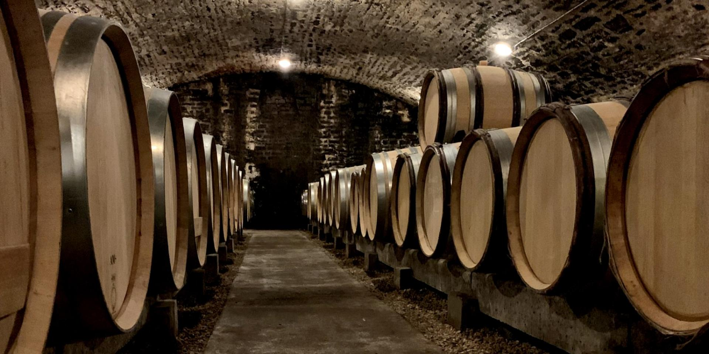
Hospices de Beaune
Museumd. 16 kmt. 32 min
Hôtel-Dieu, the Van der Weyden Last Judgement, the glazed polychrome roof. Self-guided audio €9.50 adult / €6.25 reduced / free under 6[12].
A vintage road-atlas plate of every day-trip target inside a 30 km circle of 36 Place d'Armes — distances, drive times, Sunday hours, and how to bend the day around a five-hour tasting menu.
Chagny is the geographic pivot of Burgundy. One full day → Beaune (16 km / 32 min)[77]: Hospices, négociant cellar, Saturday market. Half-day → the Voie des Vignes from Santenay through Pommard and Meursault, 23 km of vineyard road and bike path[37]. Sunday → the Chagny market[76], then any Beaune cellar still pouring (Patriarche, Bouchard Aîné, Marché aux Vins, Jaffelin)[75]. And before any of it — be back, showered, hungry by 19:45. A Lameloise tasting menu runs ~5 hours; one diner clocked 20:00 → 01:00[73].
Concentric rings at 5, 15, 25 km. Dashed red boundary at 30 km. Wine villages in burgundy red, towns in indigo, châteaux as brown squares, outdoor sites as green triangles. La Rochepot rendered hollow — closed in 2026.
Beaune is the obvious anchor: half an hour by D974, every famous Burgundy thing per square kilometre, and — uniquely for the region — open on Sundays. The Hospices courtyard runs 9:00–19:30 continuously April through mid-November, every day of the year[11][74]. Pair it with one négociant cellar and you have a full day.

Hôtel-Dieu, the Van der Weyden Last Judgement, the glazed polychrome roof. Self-guided audio €9.50 adult / €6.25 reduced / free under 6[12].
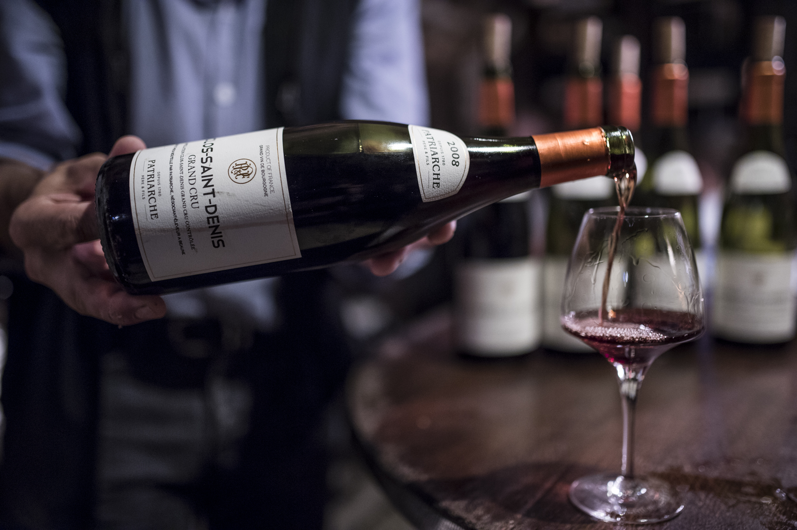
Burgundy's largest cellar — 5 km of 13th-c. galleries beneath a former Visitandines convent[17]. Self-guided audio + sommelier-poured tasting of 6 wines (3 white, 3 red incl. Meursault, Nuits-St-Georges 1er Cru), 9:45–16:45 in 10-cap slots[6][16].
Self-guided tour through three intact chapels of the former Cordeliers convent. Découverte (5 wines) €25/€29; Prestige (7) €49/€59; Exclusive €65; Tailor-made from €99[13]. Online cheaper than on-site.
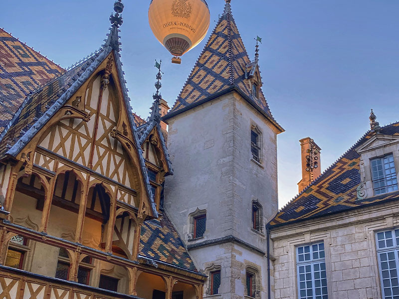
Roughly 1 ha of cellars between the Hospice and Notre-Dame with Dukes-of-Burgundy stonework[19]. Appointment only, Mon–Sat 10:00 / 14:00 / 16:00, tastings €38, €70 or €120[18].
130 ha including 12 ha grands crus and 74 ha 1er crus, founded 1731[21]. Guided Château de Beaune tours Tue–Sat 14:30 with 6- or 8-wine flights.
"Parcours des 5 Sens" guided through 18th-c. cellars — 5 wines (2 white, 3 red, Village + 1er Cru), max 20 per group, departures 10:30–17:00[20]. Sunday-open exception in Beaune.
A landmark building with 24-metre vine-like tendrils at 21 av. Charles de Gaulle, devoted to the UNESCO Climats[14]. €14.50; daily 10:00–19:00 high season; closed 5–18 Jan 2026; reservation mandatory[15].
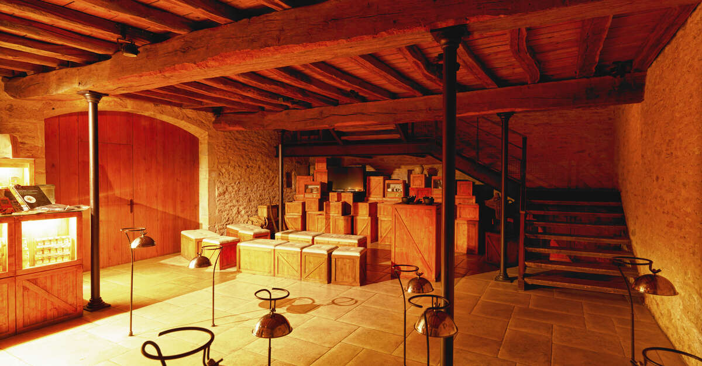
Parcours Découvertes guided trail through Burgundy's last family mustard maker. Daily 10:00 / 11:30 / 15:00 / 16:30; €12 adult / €9 child[22]. 5-min walk south of the ramparts.
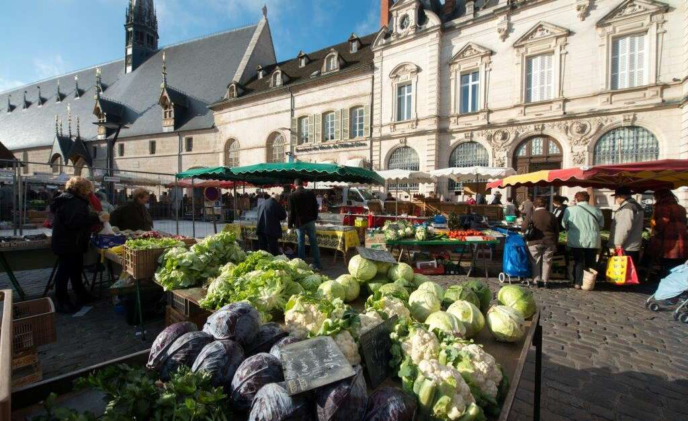
Saturday 7:00–13:00 sprawling across Place de la Halle, Place Fleury and avenue de la République — about 180 stalls of produce, cheese, charcuterie, organic, plus a March–November flea market on Place Carnot[23].
The Voie des Vignes runs Beaune → Pommard → Volnay → Meursault → Chassagne-Montrachet → Santenay, 23 km of easy cycling or leisurely driving[37]. Below, picked south-to-north (closest to Chagny first). Walk-in availability is rare here: most small Côte de Beaune domaines need an emailed appointment, and the lunch shutdown noon–14:00 is real[8].
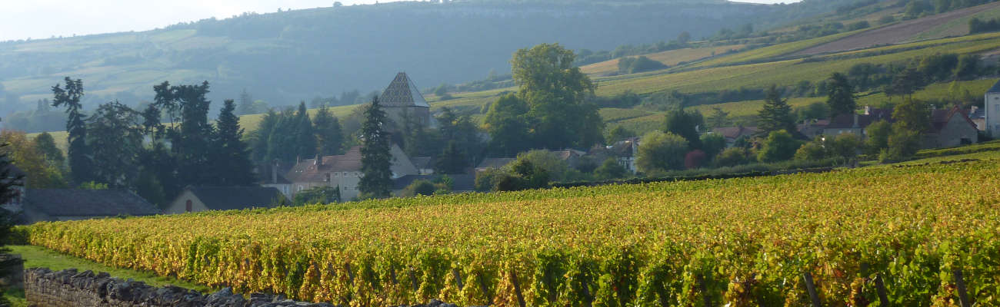
Voie des Vignes trailhead. Château Philippe le Hardi from €11/adult; Château de la Crée from €22/adult — both bookable online with instant confirmation[2].
Domaine Bader-Mimeur — family estate since 1919, the rare walk-in stop, daily 9:30–18:00 (appointment preferred)[10].
Château de Saint-Aubin / Maison Prosper Maufoux — Expérience Prosper €37 pp (5 wines, 1 h), Expérience Prestige €62 pp (6 wines + 4 1er crus + Burgundy snacks, 1 h 30); reservation only[4].
Maison Chanzy tasting cellar/wine bar visit from €28/adult; bookable up to 30 min before[3].
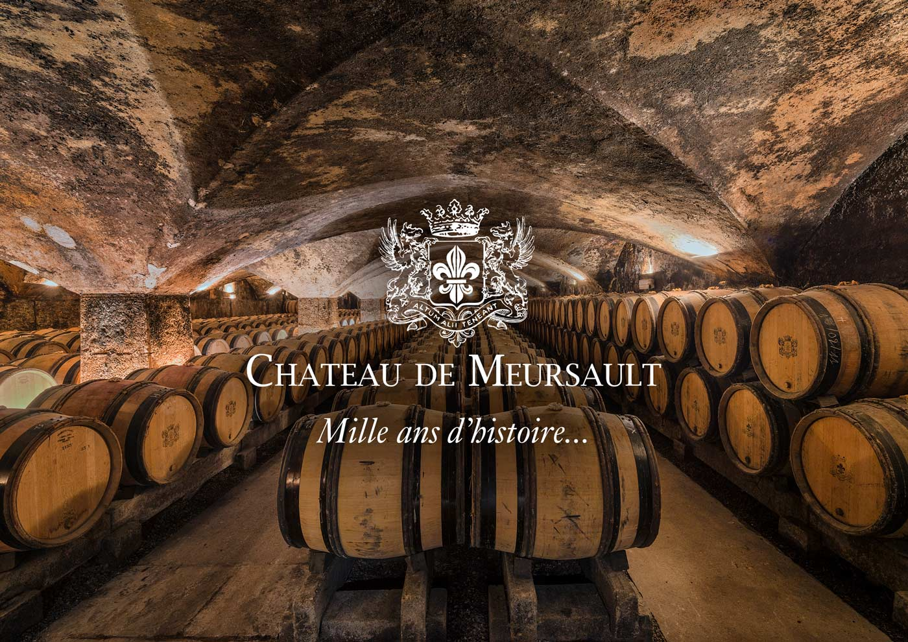
Château de Meursault — Grands Terroirs (7 wines) €59, Prestige (8) €105, Exclusive €175; walk-in tastings from €35 subject to availability[1].
Château de Pommard — Discover Burgundy €30, Clos Marey-Monge €41, Custom €94 (range €30–€260)[5]. Booking free up to 4 h before, cancel free 2 h before. WSET-trained advisors[29].
Domaine Comte Senard (since 1857, Grands Crus producer) — most-booked tasting in the appellation, instant confirmation, free cancellation[9].
Henri de Villamont — on Beaune Tourism's curated "10 must-see wineries" list[7].
Lunch-window warning. Most small Côte de Beaune domaines shut noon–14:00 and all day Sunday. Patriarche and Bouchard Aîné in Beaune are the standard Sunday exceptions. Small Pommard or Meursault domaines almost always need an emailed appointment[8].
The southern half of the radius — under-priced and under-trafficked. All five Côte Chalonnaise village AOCs sit inside 30 km of Chagny: Bouzeron (only AOC for Aligoté, won 1998 through Aubert de Villaine's lobbying)[60][66], Rully (Crémant heart, 23 1ers), Mercurey (largest AOC, 30 1ers, mostly red), Givry (17 1ers), Montagny (whites only, 49 1ers)[60].
| Stop | What | Price | Hours / Notes |
|---|---|---|---|
| Dom. A. et P. de Villaine Bouzeron | Aubert de Villaine's (co-director DRC) estate; organic 1986, biodynamic 2000 | by appt | Now run by nephew Pierre de Benoist [65] |
| Château de Rully 5 km | Private medieval château + 3-wine tasting with gougères | €10 / cash | Daily 10:45–18:00; Jul–Aug by appt; free under 12 [27][28] |
| Maison André Delorme Rully | Crémant cellars carved into rock — 5 tasting formulas | varies | Artisanal Crémant process, vaulted cellar [63] |
| Vitteaut-Alberti Rully | Crémant since 1951 · "Immersion" tour 1 h 45 | €25 / 6 tast. | EN/FR, booking essential [64] |
| Château de Chamirey Mercurey | 18th-c., 37 ha incl. 15 ha 1ers crus | €0 – €55 | Avg Mercurey tour ~€40 [62] |
| Caveau Givry Vins Givry | Enomatic card · 30+ wines from local domaines | €11 – €38.50 | Wed–Sun 10–13 / 15–18:30, Apr–Oct [61] |
| Vignerons de Buxy 25 km | 200-grower cooperative · all 4 AOCs + Crémant | free | New "Maison Millebuis" visitor centre [67][68] |
Givry's flagship event is the early-April Marché aux Vins — a one-weekend pour-around with the village's producers (30th edition ran 5–7 April)[70].
A real city, not a wine-tourist set piece — the only place inside the radius for a proper old town and a flagship museum.
Cathédrale Saint-Vincent on its eponymous square dates 1090–1520, with 15th-c. half-timbered houses around it and a 19th-c. neo-gothic west façade[58].
The Musée Nicéphore Niépce on Quai des Messageries is entrée libre — 3 million images and 10,000+ cameras, including Niépce's original Chambre de la Découverte, the first photographic camera[52][53]. Niépce made the world's first surviving photograph (View from the Window at Le Gras, ~1826) 5 km away at Saint-Loup-de-Varennes[54]; France is staging a year-long 2026 bicentenary anchored there[55]. Hours: Sep–Jun 9:30–11:45 / 14:00–17:45, Jul–Aug 10:00–13:00 / 14:00–18:00, closed Tue.
Sunday morning market sprawls Place Saint-Vincent → Place de Beaune — Bresse poultry, Charolais beef, snails, cheeses, charcuterie — crowds so thick it's hard to move[56][57]. Also Friday food, Wednesday organic. Outside town, Parc Saint-Nicolas has 115 ha with a 3 km rose-history trail and 600+ varieties[59].
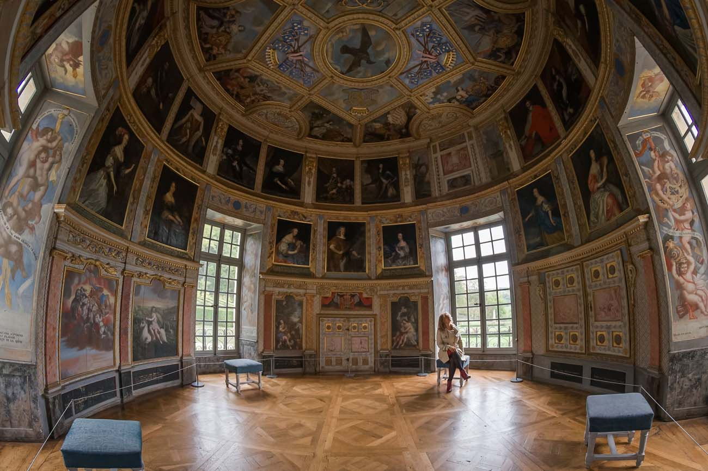
The honest count of working, visit-worthy castles inside the radius is shorter than the brochures suggest. La Rochepot was the famous one — it's closed.
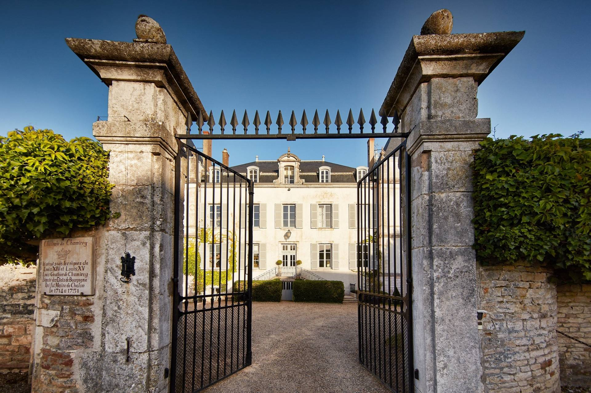
Privately owned medieval château. The family runs guided interior tours of the ground and first floors paired with a tasting of three Rully wines and gougères in either the medieval kitchen or a 15th-c. cellar — €10 adult, free under 12, cash only[27][28]. The closest castle worth your time.
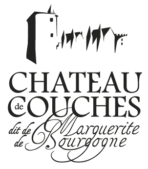
An 11th-c. fortress with the Marguerite de Bourgogne legend. Audio-guided or self-guided visits at a flat €8, plus a tasting cellar and gourmet restaurant on site[26][69]. 2026 themed dates: Journées du Patrimoine 19–20 Sep, Halloween 21 Oct–1 Nov, Noël au Château 19–30 Dec.
"Fontainebleau of Burgundy" — birthplace of Maréchal de MacMahon (not Vauban, despite frequent online confusion). Open daily 4 Apr–1 Nov 2026, 09:30–17:00; guided château + park €10.20 adult / €4.50 child / €29 family[33].
The polychrome-roof shot you've seen on every postcard. The Cour d'appel de Metz formally confiscated the property from former owner Dmitri Malinovsky on 12 March 2026 and AGRASC is running emergency restoration ahead of resale[24]. The local Nolay tourist office confirms it can only be photographed from outside[25]. Don't drive out specifically for it. The exterior shot from the road below is still free[78].
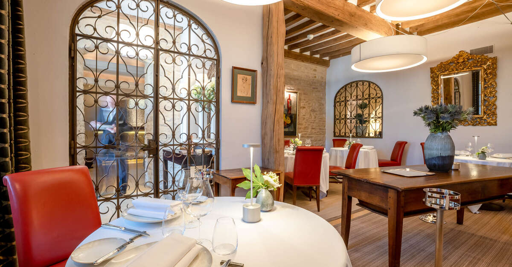
In Chagny itself the 12th-c. Tour Bajole — a building once dependent on the priory of Saint-Georges — is the Maison Lameloise building, visible only from outside[34]. A guided "Discovering Chagny" tour by the tourist office runs Tuesdays 15:00 June–September, covering the 12th–13th-c. Saint-Martin church and Romanesque bell tower plus the 1715 apothecary[35].
Chagny sits at the junction of two flagship routes. The Voie des Vignes runs 23 km Beaune → Pommard → Meursault → Chassagne → Santenay, easy, 149 m total ascent[37]. At Santenay it merges into the Canal du Centre towpath of EuroVelo 6, a flat 24 km to Chalon-sur-Saône, with Chagny's canal port roughly halfway[38].
| Rental | Half-day | Full day | Where |
|---|---|---|---|
| Les Cabottes Change | €25 | €45 | Directly on the Voie des Vignes; child seats/trailers [39] |
| Santenay Tourist Office Santenay | €25 | €35 | Trailhead, classic + electric [40] |
| Bourgogne Randonnées Beaune | varies | varies | Classic / road / electric — central Beaune [41] |
| Operator | Take-off | Flight | Price 2026 | Notes |
|---|---|---|---|---|
| Air Escargot | Remigny 8 km | ~1.5 h over Nuits-St-Georges, Beaune, Chalon | €240 / €220 / €200 pp (by group size) | Aperitif + minibus return; ½ price under 12 [44][45] |
| France Montgolfières | Marigny-lès-Reullée near Beaune | Discovery flight, 1 Apr – 31 Oct | €199 – €249 pp | Sunrise or 2 h before sunset [46] |
From Saint-Léger-sur-Dheune (~15 km west), CrisBoat offers no-licence self-drive cruisers including a 3-night round-trip to Chagny (26 km of canal)[42]. Locaboat runs a parallel pénichette fleet from the same port after a 1-hour training session[43]. For a few hours rather than a week, the Voie Verte towpath is the easier hit.
The Chemin des Grands Crus (GR de Pays) runs 87 km Dijon → Beaune → Santenay through the 1,247 parcels of the UNESCO Climats, yellow-and-red signed; it splits cleanly into 3–5 day-stage sections served by trains and Transco buses[47][49]. Beaune Tourism markets the southern segment through Pommard, Meursault, Chassagne-Montrachet and Santenay as the headline vineyard walk — all inside the 30 km radius[48].
The single best short walk in the radius is Mont de Sène / Montagne des Trois Croix above Santenay: 10.7 km loop, 358 m of ascent, departing place du Jet d'Eau (223 m) in the village centre and climbing through vineyards and a falaise section above the Bois de la Fée to a 521 m summit with three 18th-c. stone crosses and two orientation tables looking over the Côte de Beaune, the Saône valley toward the Jura, the Clunisois and the Morvan[80]. Moderate half-day, not a one-hour stroll; pairs naturally with a Santenay tasting.
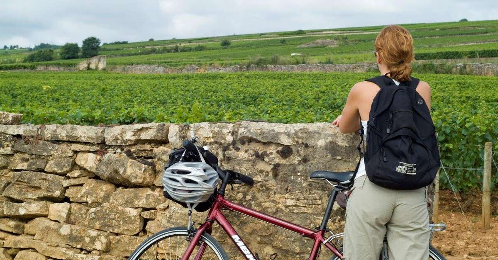
Open 11 Feb – 27 Dec 2026 (cures 16 Mar – 21 Nov). Aqua-détente space: hot pool, hammam, sauna, caldarium[50].
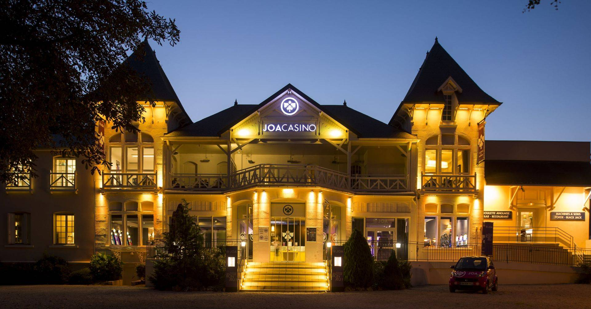
150 slot machines, English roulette, blackjack, Ultimate Poker. Till 2 am weekdays / 4 am Fri–Sat[51]. Comptoir JOA bistro.
Sunday is genuinely quiet in rural Burgundy — most shops are closed[75]. Two columns: who's pouring, who's not.
Lameloise serves lunch 12:00–13:00 and dinner 19:30–21:00, Thursday through Monday; closed Tuesday and Wednesday[71][72]. A tasting menu runs roughly five hours — one diner reported 20:00 → 01:00[73]. Plan backwards from a marathon, not from a meal.
Beaune-heavy. Best for first-timers.
Air + bike + city. For returning visitors.
Château du Clos de Vougeot sits in the Côte de Nuits ~55–60 km north-east; daily 9:30–18:00 high season, guided tour €15[30][31].
Abbaye de Cîteaux ~45–50 km away, Wed–Sun 10–13 / 14–18, guided 1 h 15, reservations essential[32].
Château de Cormatin sits ~41 km SSW into the Mâconnais[81]. All three are real attractions; none belong on a Chagny day-trip list.